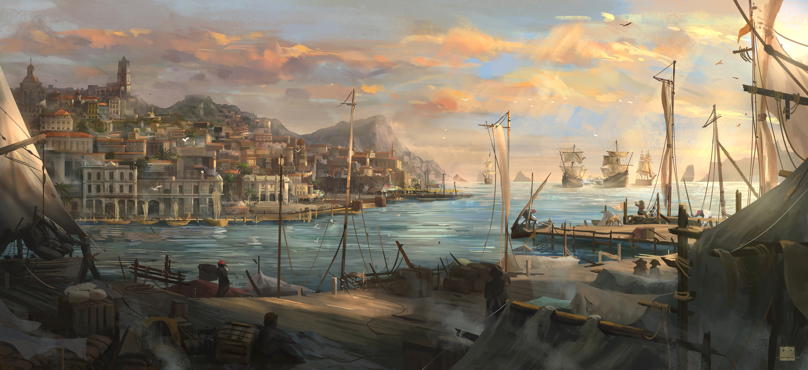

När Tidvattnet Vänder

Véradis har alltid legat här, där havet möter land, i en famn av sten och trä som kramar om sin skyddade hamn. I generationer har den varit en plats för handel och sjöfart, en “melting pot” där varor och folk från när och fjärran mötts, bytt ägare, och försvunnit vidare. Dess gränder har ekat av sjömäns sånger, köpmäns prutande och det ständiga larmet från kajer och verkstäder.
I generationer var havet väster om Véradis en oskriven varning. Bortom de kända handelsrutterna på varje sjökort, bortom de sista trygga öarna, fanns bara “västerut”, en riktning förknippad med försvinnande, en synonym med skepp som seglade ut mot horisonten för att aldrig mer återvända. Fanns land där? Kanske. Gamla, dammiga kartor i bortglömda arkiv kunde ibland mumla om en “Viskande Kust” eller ett “Land av skuggor”, men dessa var sagor för barn, och avfärdades av erfarna kaptener och pragmatiska köpmän som gamla skrönor. Det fanns inga rikedomar att hämta från ett hav som bara svalde skepp hela. Det enda man visste med säkerhet var att inte segla för långt västerut. Priset var för högt, mysteriet för djupt och för ointressant.
Véradis fortsatte med sitt. Handel, skeppsbygge, intriger – med blicken fäst på kända farvattnen, på hamnar som gav vinst, på grannar man kunde konkurrera eller slåss med. Den västra oceanen var en tom fläck på kartan, inte av okunskap, utan av ett medvetet undvikande.
Tills en dag. När ryktet började sprida sig. Inte ett rykte om kontinenten i sig, för den var ju bara en gammal, irrelevant skräckhistoria – utan ett rykte om att någon, mot alla odds, hade hittat en väg. En säker väg genom stormarna, en nyckel till de magiska dimmorna, en metod för att navigera de strömmar som tidigare alltid lett till undergång.
Över en natt förvandlades den ignorerade myten till en brännande möjlighet. Den bortglömda kontinenten, tidigare bara ett namn för katastrof, blev plötsligt det enda samtalsämnet värdigt att föras i varje sjaskig hamnkrog, varje överdådigt adelspalats, varje dammigt handelshus. Gamla, spruckna sjökort som ingen ägnat en tanke på i decennier granskades med ny, febrig intensitet. Varje kryptisk symbol, varje bleknad linje granskades nu med en nästan religiös intensitet. Berättelser från de få, halvgalna överlevande från tidigare misslyckade försök, tidigare avfärdade som galenskapars yttranden, vägdes nu på guldvåg, varje ord relevant i jakten på en dold ledtråd.
Vem har hittat vägen? Och hur? Var det ren tur? Var det en upptäckt i en skeppsbruten loggbok? En pakt med dolda makter? Ingen visste svaret, men den febrila jakten på personen som bar på hemligheten, på kartan som visade vägen, på kunskapen – exploderade.
Véradis, staden som stått med ryggen åt väst, vände sig nu om med en våldsam kraft. Skeppsvarven fick plötsligt order om att bygga fartyg inte bara för handel, utan för utforskning av det tidigare förbjudna. Navigatörer som kunde tala om mer än bara tidvatten och kustlinjer, de som mumlade om magnetiska avvikelser och glömda strömmar, fann sig plötsligt omringade av män med tunga pengapåsar och kalla ögon. Lärda som kunde tyda fragment av uråldriga språk eller känna igen symboler från legender fick oväntade besökare sent om natten. Och från alla håll strömmade folk till staden, inte bara lockade av kontinentens hypotetiska rikedomar, utan av den ännu större vinsten: att vara den som höll i nyckeln.
Den gamla hamnstaden, som nöjt sig med sina kända rutiner, kastades in i en ny, osäker framtid. Den sovande draken i väster har väckts till liv, inte genom sin egen kraft, utan genom upptäckten av vägen dit. Och Véradis stod nu vid ingången, darrandes av lika delar girighet och rädsla för vad som väntade på andra sidan.
Och det är hit ni har kommit, tillsammans på samma vagn efter den långa resan mot Véradis. Vad som driver just er flockas med tusentals andra skäl längs den här vägen. Kanske är det glimten av guld i ryktena från väst, en chans att återuppbygga ett krossat liv eller fly fattigdomens för gott. Kanske är det jakten på kunskap, en viskning om en uråldrig hemlighet begravd i stadens förflutna, eller på den där kontinenten som äntligen verkar vara inom räckhåll. Kanske lämnar ni något bakom er, fiender ni inte kan slåss emot ensamma, eller ett förflutet ni desperat försöker skaka av er, och Véradis laglösa, kaotiska rykte lovade en fristad, en plats att försvinna på. Eller kanske är det ett mer personligt kall som ekar hos er – ett löfte att finna någon som svalts av stadens myller, en tung skuld som måste betalas till rätt (eller fel) person, eller en gammal familjeförbannelse vars enda hopp om bot sägs finnas bortom det västra havet.
Oavsett vad som driver er, era gömda rädslor eller brinnande förhoppningar, har resan hit svetsat er samman. Ni har delat de sista ransonerna, turats om att starta er lägereld och hålla vakt under kalla, stjärnlösa nätter. Kanske till och med försvarat den knarrande vagnen mot vägens faror – banditer med hungriga ögon eller något värre som ylade i mörkret. Ni är inte längre främlingar som delar ett flak. Ni är en enhet, vare sig ni vill det eller ej.
Vissa av er känner varandra redan innan resan. Hur då? Är ni gamla vänner? Tidigare kollegor? Släkt? eller kanske delar ni på en gemensam hemlighet? Det är upp till er.